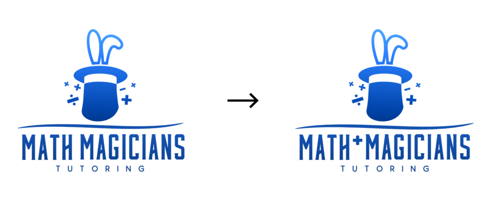
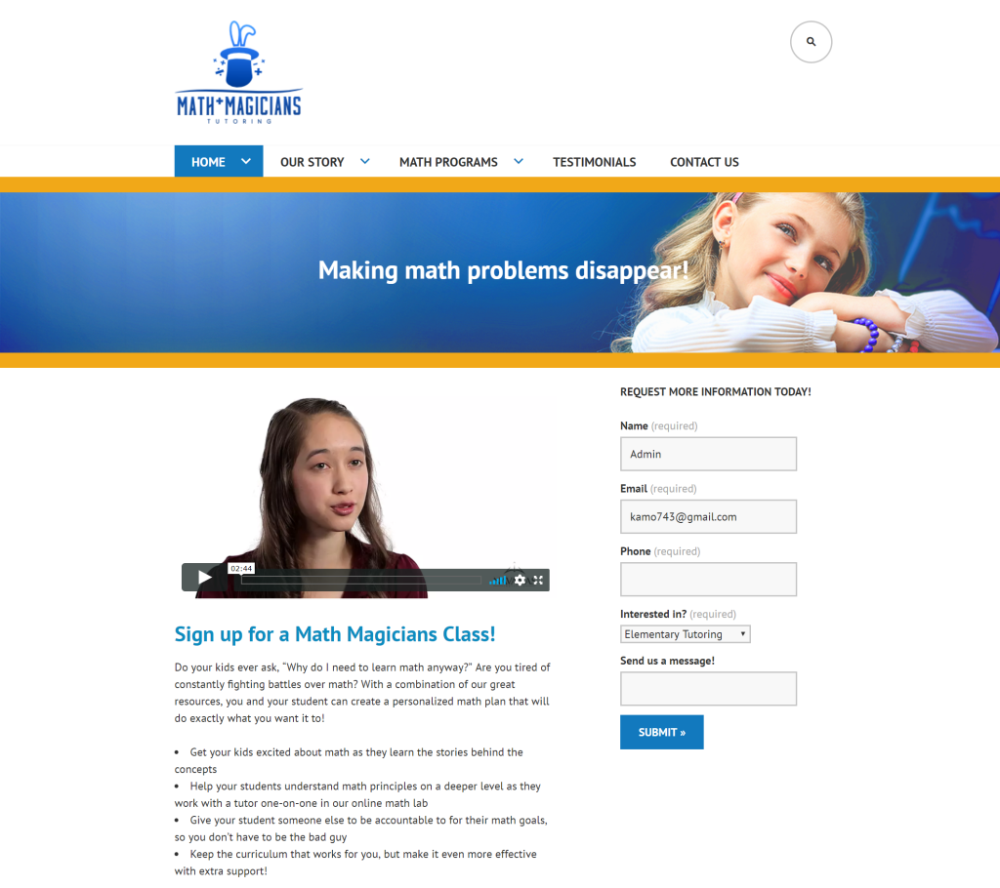
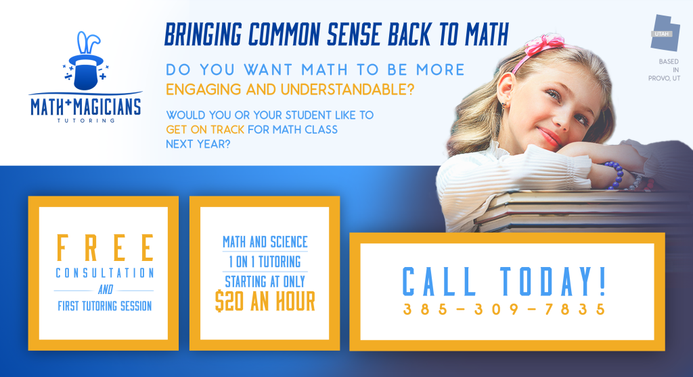

Client: Math Magicians, a Utah-based tutoring business.
- Design company branding
- Create company website
- Design hand-out flyers.
Developing Branding [Goals/Objectives]:
The CEO and I had several in-person discussions to identify their target audience and determine what aesthetic would present their business well. The desired feel for the company was identified as “reliable, clean, and professional, targeted to parents while still being inviting to children. Gives off a feeling of safety, communicating the idea that math is not competitive or challenging, but can be easy and fun.”
Logo Design:
I researched the branding of major competitors, including MathNasium and Sylvan Learning, and was unable to find any color choice or set of icons (other than math symbols) regularly associated with the math tutoring industry.
I settled on a limited palette: dark blue to communicate the professionalism and trustworthiness of the brand, with orange accents to attract attention when needed.
Because the color scheme was a reserved one, I decided to create a logo icon that felt kid-friendly to keep the overall design approachable for both children and adults. Out of all my sketches, the CEO and I decided that the sketch that blended the two themes the best was a magician’s hat featuring math symbols around it that look like sparks of magic.
The CEO requested a logo font that had a “Great Gatsby feel,” which after some further exploration I found that meant she wanted a font that was slim, tall, and classy.
To improve logo readability and brand clarity I recommended changing the logo text from “Math Magicians” to “Math+Magicians.” Although with this change I worried that the clientele might mistake the logo text to mean that Math Magicians was trying to teach math to magicians, instead of children. To prevent this potential miscommunication, the new logo design was sent to a focus group of twenty participants, where it was determined that the new logo effectively presented the desired idea of the company while being appealing and legible.
Website Design:
When making a website, I always have two questions in mind:
- What do clients want to accomplish by visiting the website?
- Who is going to update the website after I hand off the project?
The CEO indicated the main reason their audience would visit the website would be to register their children for their classes. Because of this, they wanted to include an “About Us” section on the website’s main menu with information about and insight into their company’s teaching method. I determined to make a site with a sign up form directly on the front page with the “About Us” section included as a menu option.
The CEO also indicated that they would be managing the website themselves after it was handed off, and that they were familiar with WordPress.com, making it the obvious platform choice.
Fliers:
Branding having been established, flyers design was a simple process. I asked what information was needed on the flyers as well as what links, offers, or extra information we could include to help entice potential customers. Because the CEO would not be the one handing out the flyers, we wanted to make sure that their phone number would be a call-to-action so that potential clients could contact them and hear their voice.
Working on the Math Magicians project was made much easier because of the consistent and open line of communication I was able to maintain with the client. It was also a good reminder to always work to honor requests from the client, finding solutions to meet their needs that may not be immediately obvious while keeping sound design principles in mind to create a better product.